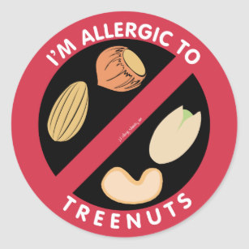

Ever since I was young I have had severe food allergies. Here is a list of all of them. This will be very useful when I go to resturants.
(Every nut except peanuts)
- Almonds
- Cashews
- Hazelnuts
- Macadamia Nuts
- Pecans
- Pistachios
- Walnuts
(Seeds)
- Seasme Seeds
- Poppy Seeds
- Sunflower Seeds
- Flax Seed
- Mustard Seed
